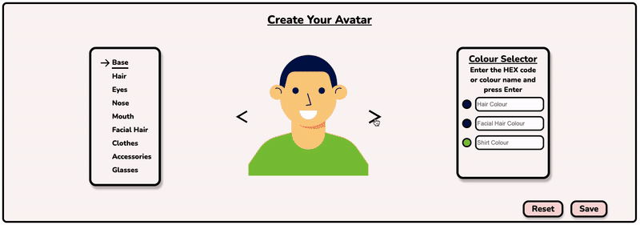

CreateAvatar.js
Examples
Documentation
CreateAvatar.js
A JavaScript library for easily integrating an avatar generator into your application.

Hundreds of customizeable variations!
A great way to allow users to bring their own personality into your app.
Get started now!